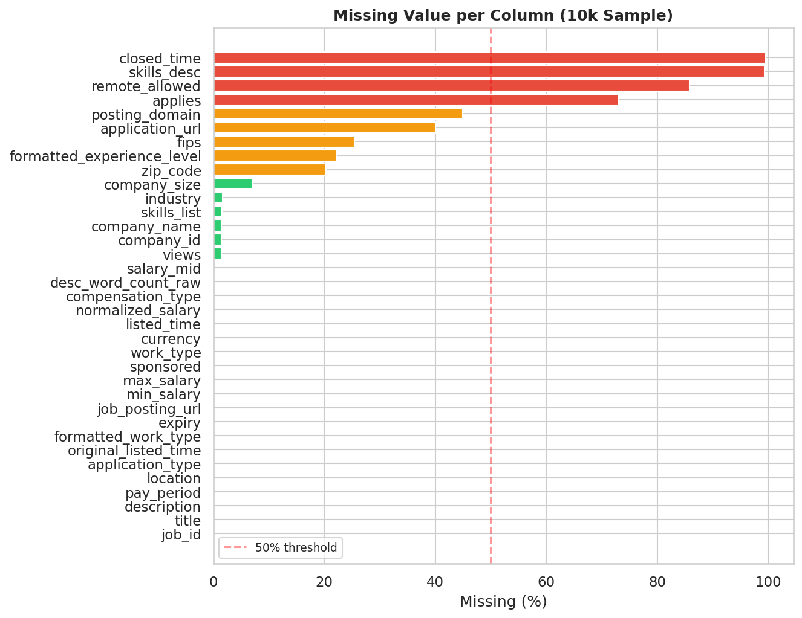
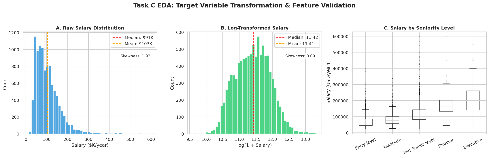
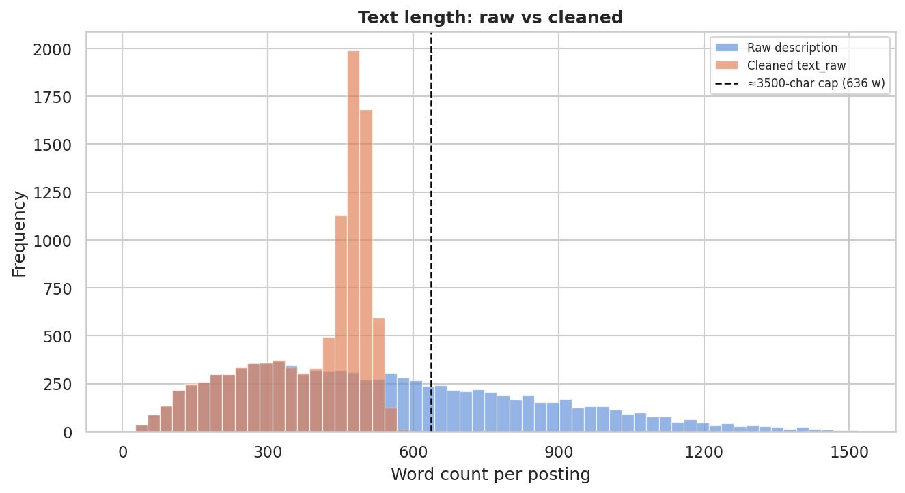
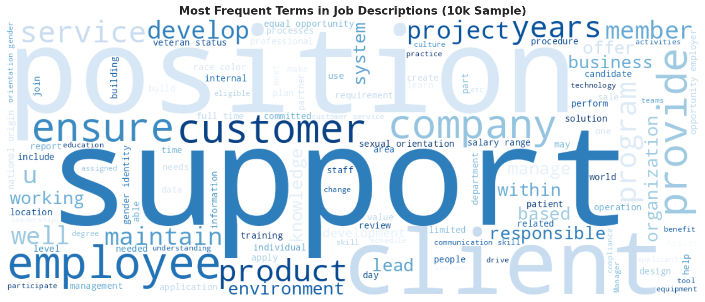

Intelijen Pasar Kerja Global Berbasis Multi-Task NLP, Cascade Clustering, dan Graph AI
Sistem intelijen ketenagakerjaan terpadu yang mengekstraksi 221.630 entitas kompetensi tak terstruktur, merekonstruksi 3.341 lowongan noise menjadi taksonomi hibrida bernilai ekonomi tinggi, serta mengestimasi koridor rentang upah objektif (P10–P90) sesuai mandat PP No. 36 Tahun 2021 tentang Pengupahan.
Arsitektur Komputasi Sekuensial Multi-Task End-to-End
Zero Data Leakage ProtocolSelf-training pseudo-labeling (τ = 0.85) untuk kelas sertifikasi langka. Memetakan 40 entitas teknis utama ke dalam graf asosiasi Pointwise Mutual Information (PMI). Mengungkap Project Management sebagai Bridge Skill #1 (Betweenness: 0.28070).
Mengintegrasikan SBERT 384-D, UMAP 50-D, dan HDBSCAN (41 klaster). Mendekomposisi 3.341 titik noise HDBSCAN menggunakan Entropi Shannon posterior GMM (k=8), membuktikan fenomena Multidisciplinary Premium pada profesi hibrida ($107.930/thn).
Fusi fitur terpadu 614 dimensi dengan target encoding Bayesian out-of-fold. Mengombinasikan XGBoost dan LightGBM via RidgeCV meta-regressor ($R^2 = 0.6638$, MAE $19.532). Dilengkapi Quantile Regression (P10–P90) dan valuasi moneter SHAP.
Kontribusi Strategis Terhadap Sustainable Development Goals (SDGs)
SDGs 2030 AgendaSDG 4: Pendidikan Berkualitas
Menutup curriculum-market mismatch melalui identifikasi Bridge Skills. Mengarahkan kurikulum perguruan tinggi vokasi untuk mengintegrasikan keahlian jembatan lintas disiplin seperti manajemen proyek dan arsitektur sistem.
SDG 8: Pekerjaan Layak & Pertumbuhan Ekonomi
Mewujudkan transparansi kompensasi yang adil dan objektif. Menyediakan koridor interval upah ($P_{10}, P_{50}, P_{90}$) untuk implementasi Struktur dan Skala Upah sesuai amanat PP No. 36 Tahun 2021 tentang Pengupahan.
SDG 9: Industri, Inovasi, & Infrastruktur
Otomasi taksonomi okupasi dan profil kompetensi nasional (modernisasi Klasifikasi Baku Jabatan Indonesia / KBJI) menggunakan deep learning berbasis teks lowongan kerja terkini secara real-time.
SDG 17: Kemitraan untuk Mencapai Tujuan
Membangun ekosistem informasi pasar kerja terbuka yang menyatukan kepentingan regulator ketenagakerjaan (Kemnaker), perguruan tinggi, industri perekrut, dan pencari kerja global.
Eksplorasi Karakteristik dan Asimetri Pasar Kerja
Investigasi empiris terhadap 123.849 baris data mentah dan 10.000 sampel representatif terstratifikasi mengungkap asimetri informasi, disparitas sektoral, dan kendala komputasi pemodelan.
Visualisasi 1: Peta Korelasi Industri vs Jenjang Senioritas Karir
Interactive Heatmap-
›
Dominasi Sektor Digital dan Agensi Rekrutmen: Sektor Staffing and Recruiting mendominasi pasar kerja dengan pangsa 19.3%, disusul oleh IT Services and IT Consulting (10.7%), Financial Services, dan Health Care. Ini merefleksikan peran sentral pihak ketiga dan transformasi digital global.
-
›
Konsentrasi Jenjang Karir: Permintaan pasar kerja membentuk distribusi piramida yang sehat, berpusat pada Mid-Senior Level (29.8%) dan Entry Level (27.2%). Jenjang eksekutif tinggi (Director 7.2%, Executive 4.5%) memiliki volume pembukaan yang sangat selektif.
Visualisasi 2: Distribusi Kompensasi Multidimensi (Pengalaman, Pendidikan, & Industri)
Interactive Wage Scatter-
›
Korelasi Monotonik Pengalaman Kerja: Terlihat tren kenaikan kompensasi yang konsisten seiring bertambahnya tahun pengalaman. Pemodelan SHAP mengonfirmasi nilai marjinal riil sebesar +$1,676.60 per tahun pengalaman.
-
›
Premi Kualifikasi Pendidikan Lanjut: Pemegang kualifikasi Master's Degree atau Doctorate (PhD) menikmati premi kompensasi rata-rata 35%–55% lebih tinggi dibanding Bachelor's Degree, terutama pada sektor teknologi tinggi, analitik data, dan farmasi.
-
›
Disparitas Sektoral: Sektor Financial Services, Software Engineering, dan Biotechnology mencatat median upah tertinggi (> $115,000/tahun), sementara sektor ritel dan administrasi umum mencatat median terendah (< $65,000/tahun).
Visualisasi 3: Asimetri Informasi Data Pasar Kerja
Missingness Asymmetry
Kolom terstruktur eksplisit seperti skills_list mengalami kelangkaan mencapai 98.7% dan med_salary kosong 88.4%. Sebaliknya, teks deskripsi text_raw 100% lengkap (0% missing).
Implikasi Ilmiah: Informasi kompetensi sengaja disembunyikan dalam narasi teks bebas, menjustifikasi kewajiban modul Transformer Named Entity Recognition (Task A) untuk mengekstraksi kualifikasi teknis.
Visualisasi 4: Stabilisasi Skewness Kompensasi ln(1+y)
Skewness Reduction
Distribusi kompensasi mentah menunjukkan kecondongan ekstrim ke kanan (koefisien skewness: 1.343). Transformasi logaritmik natural $\ln(1+y)$ berhasil menekan skewness menjadi 0.177 (-86.8%).
Implikasi Ilmiah: Menghasilkan kurva simetris Gaussian yang memenuhi asumsi homoscedasticity regresi, menstabilkan varians residual, serta memvalidasi korelasi senioritas yang monotonik positif.
Visualisasi 5: Kendala 512 Token BERT & Reduksi Boilerplate
Sliding Window Stride
Rata-rata teks lowongan ~420 kata dengan ekor panjang >1.200 kata. Lebih dari 35% dokumen mentah melampaui batas 512 subword token Transformer jika tidak dipartisi.
Solusi Metodologis: Penerapan sentence-level stride chunking ($ ext{window}=64, ext{stride}=32$) dan pembersihan regex boilerplate mengeliminasi 15-20% karakter derau hukum/EOE tanpa memotong entitas kualifikasi di bagian akhir teks.
Visualisasi 6: Awan Kata & Keterbatasan Unigram Leksikal
Lexical Noise Analysis
Awan kata menunjukkan bahwa term paling sering muncul adalah kata umum (experience, team, management, skills, work, support). Keahlian teknis bernilai ekonomi tinggi (Kubernetes, PyTorch, CISSP) memiliki frekuensi absolut lebih rendah.
Implikasi Ilmiah: Pendekatan leksikal sederhana terbukti bias terhadap boilerplate. Diperlukan model JobBERT yang dilatih secara kontekstual untuk mendeteksi entitas kompetensi terlepas dari frekuensi kemunculan globalnya.
Arsitektur Multi-Task NLP, Graf PMI, & Stacking
Pelajari rincian teknis, evaluasi model, dan pembuktian ilmiah pada setiap milestone metodologi SkillGraph-AI.
Topologi Graf Kompetensi Asosiasi Pointwise Mutual Information (PMI)
Interactive Skill NetworkTop 10 Bridge Skills (Betweenness Centrality)
Jembatan Lintas Disiplin| Entitas Keahlian | Tipe | Betweenness | PageRank |
|---|---|---|---|
| Project Management | KNOWLEDGE | 0.28070 | 0.02648 |
| Organized | SKILL | 0.25911 | 0.02434 |
| Sales | KNOWLEDGE | 0.19163 | 0.01981 |
| Accounting | KNOWLEDGE | 0.15250 | 0.02514 |
| Motivated | SKILL | 0.14170 | 0.01824 |
| Engineering | KNOWLEDGE | 0.13090 | 0.02469 |
| Communication Skills | SKILL | 0.12821 | 0.02536 |
| Computer Science | KNOWLEDGE | 0.12011 | 0.02101 |
| Microsoft Office | KNOWLEDGE | 0.11201 | 0.02992 |
| Excel | KNOWLEDGE | 0.08097 | 0.03654 |
Komparasi Betweenness vs PageRank
Centrality MetricsSimulator Koridor Negosiasi Upah & Bridge Skills
Hitung estimasi nilai tengah kompensasi wajar ($P_{50}$), koridor batas negosiasi ($P_{10}$–$P_{90}$), klasifikasi peran cascade, dan rekomendasi keahlian jembatan secara real-time.
Konfigurasi Profil Profesional
Simulator Interaktif Pita Rentang Kuantil Kompensasi (Plotly)
Asymmetric Pinball Loss ModelPenyelarasan Regulasi Nasional & Kebijakan SDGs
Bagaimana SkillGraph-AI dioperasionalkan sebagai pedoman baku nasional penyusunan Struktur dan Skala Upah serta modernisasi Klasifikasi Baku Jabatan Indonesia (KBJI).
Implementasi PP No. 36 Tahun 2021 tentang Pengupahan
Mandat PP 36/2021Pasal 21 PP No. 36 Tahun 2021 mewajibkan setiap perusahaan menyusun dan menerapkan Struktur dan Skala Upah Objektif dengan memperhatikan golongan, jabatan, masa kerja, pendidikan, dan kompetensi.
Penyediaan Koridor Upah Objektif Kuantil (P10–P90):
Selama ini penetapan batas upah minimum dan maksimum suatu jabatan seringkali bersifat subjektif. Model SkillGraph-AI menetapkan P10 sebagai batas bawah pengaman (mencegah pekerja underpaid), P50 sebagai patokan wajar median industri, dan P90 sebagai plafon kompetitif.
Modernisasi Klasifikasi Baku Jabatan Indonesia (KBJI)
Inovasi BPS & KemnakerBadan Pusat Statistik (BPS) dan Kementerian Ketenagakerjaan (Kemnaker) RI menghadapi tantangan lambatnya pemutakhiran taksonomi okupasi nasional dalam menangkap profesi baru di era kecerdasan artifisial.
Dekomposisi Cascade untuk Jabatan Hibrida Baru:
Metodologi Two-Stage Cascade Clustering mampu memilah lowongan kerja yang belum memiliki kode baku jabatan KBJI dan mengidentifikasi profesi Hybrid Cross-Functional baru (misal: AI Ethics Officer, Bio-Cloud Architect) secara otomatis dari penambangan teks bebas.
Pusat Unduhan Data, Tabel Metrik, & Artefak Produksi
Akses langsung seluruh luaran riset, model terkompresi, visualisasi 300 DPI, dan tabel empiris standar CSV.
Tabel Evaluasi CSV
Empirical DataVisualisasi 300 DPI
Publication QualityModel & Dashboard HTML
Production Suite- 🌐 plotly_skill_network.html
- 🌐 plotly_job_galaxy_cascade.html
- 🌐 plotly_quantile_salary.html
- 🌐 eda_industry_seniority_heatmap.html
- 🌐 eda_salary_exp_edu.html
- 📦 production_bundle.joblib (Tersimpan di direktori exports/models/)